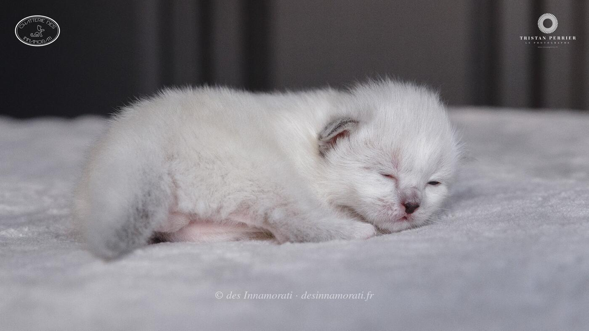
RobeMâle · Seal tabby point
Naissance5 mars 2018
ParentsMia Bella des Innamorati × Jorel du Castel Walou
StatutAdopté
Album24 photos, de mars 2018 à décembre 2024


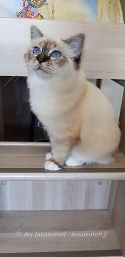

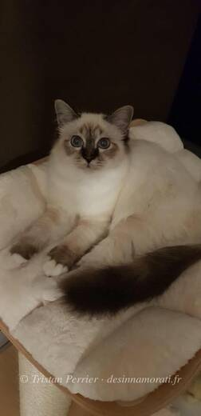

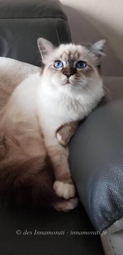

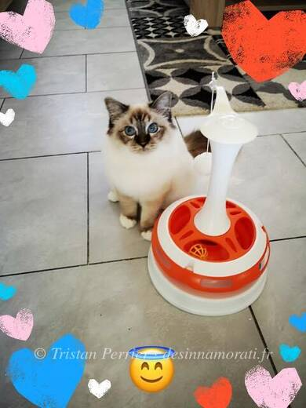

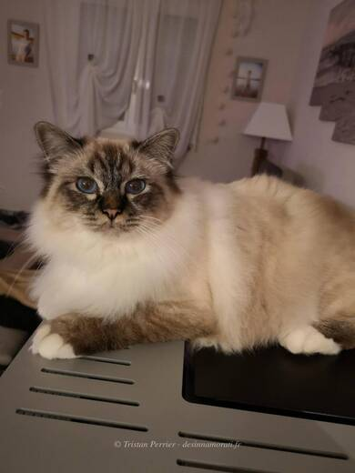

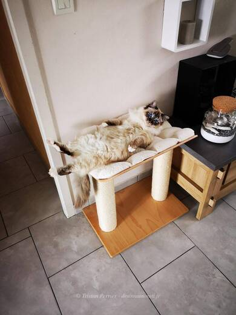

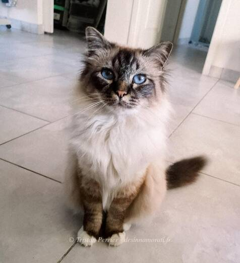

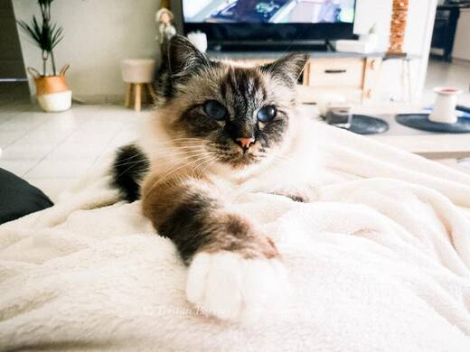

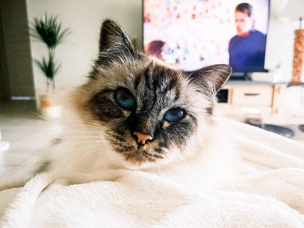

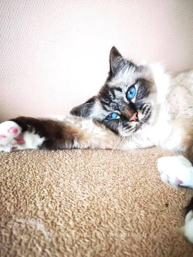

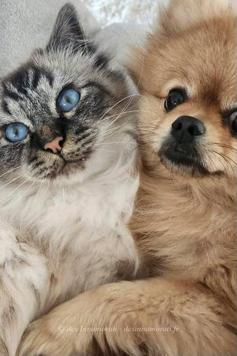

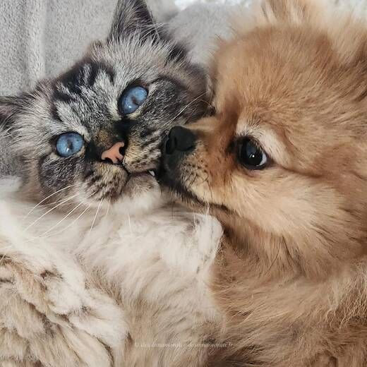

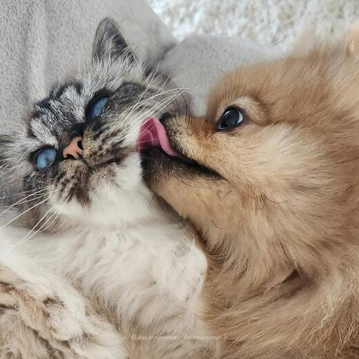

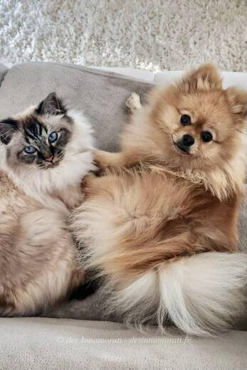
Palmarès
3 expositions · 6 jugements · 1 Best in Show2019
- ParisCAP
- ParisCAP · NOM
2018
- BiarritzEXC1
- BiarritzEXC1
- CastetsEXC1 · NOM · BIS
- CastetsEXC1 · NOM
EXC Excellent (classement) · CAC, CACIB, CAGCIB, CACS certificats de champion, champion international, grand champion international et suprême · CAP, CAPIB, CAGPIB, CAPS équivalents pour les chats stérilisés · BIV meilleur de la variété · NOM nommé pour le Best in Show · BIS Best in Show · BOB Best of Best, le meilleur de toute l’exposition
Photos réduites et marquées. Elles appartiennent à la Chatterie des Innamorati et ne peuvent pas être reprises dans une annonce.